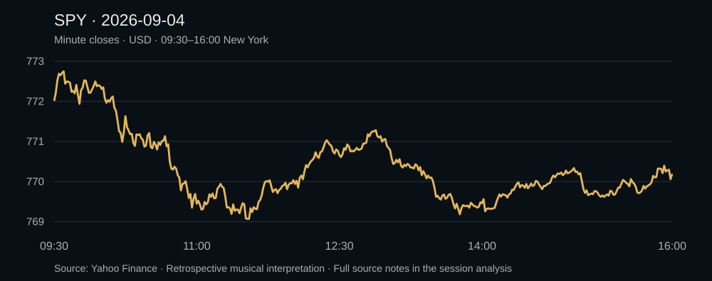

An Unfinished Return
SPY opened at $772.01, reached its low in the 11:31 ET minute, and ended at $770.19. A midday recovery gave way to a second dip and a partial return. The full 9:30–4:00 session becomes a 3:15 original instrumental.

How the day became a song
A brief opening lift gives way to a long descent, a gentler midday recovery, a second dip, and a partial recovery that closes below the open. The song should return with more activity but without a full emotional resolution.
Price controls melodic contour. Observed volume shapes rhythmic activity; volatility shapes texture. The key, tempo, instruments and seven-part arrangement are artistic choices, with LLM assistance and a procedural audio render.
| Market time ET | Song time | Section |
|---|---|---|
| 09:30–09:58 | 0:00.0–0:14.0 | Opening spark |
| 09:58–10:38 | 0:14.0–0:34.0 | Losing altitude |
| 10:38–10:56 | 0:34.0–0:43.0 | The break |
| 10:56–11:33 | 0:43.0–1:01.5 | Searching for a floor |
| 11:33–12:51 | 1:01.5–1:40.5 | A softer recovery |
| 12:51–13:45 | 1:40.5–2:07.5 | The second dip |
| 13:45–16:00 | 2:07.5–3:15.0 | An unfinished return |
The observations and their limits
The session high was $772.87 in the 09:36 bar; the low was $769.00 in the 11:31 bar. The separate 16:00 print is $770.19; the final minute bar close is $770.24.
No genuine pre-open entry exists for this date in this journal, so no morning forecast is scored.
Observed minute volume totals 28,204,051 shares, 82.92% of the provider's daily total. Dynamics use those observed volumes; no missing volume is invented.
Full-day normalization is retrospective. Minute bars do not reveal the exact intraminute path, and musical expression is not evidence of trading performance.
One market minute becomes half a second of music. Minute closes are aligned to the end of their minute; the separate 16:00 price supplies the last boundary. Notes sample that path on a musical rhythm.
All 390 minute timestamps were checked. The original WAV is exactly 195 seconds with no clipped samples. Open, high, low and the final print agree with the same provider's daily bar; this is vendor consistency, not independent exchange certification.
Explore the record
View the source data and mapping ↗
Yahoo Finance — source minute chart ↗
Yahoo Finance — daily consistency check ↗
Prepared 2026-09-04T23:34:52-04:00. Source snapshot SHA-256: 4672cae650a0fe435e7f7fcfbfd9a79ed3ec94ee206824c16faae1fb782ad299. This is an original instrumental sketch with LLM-assisted arrangement, not a vocal recording or a performance claim.